Configuring Network Controllers
Overview
Network Controller (NC) devices provides a means to manage, monitor and configure supported network devices via a graphical user interface and APIs.
Where Is It?
Network Controller can be found in the End Devices category on the device palette as shown below:
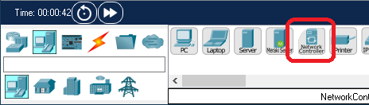
Basic Configuration
On a basic level, you can configure the Global Settings and Interface Settings of a Network Controller just like you can do on a regular PC. In addition the controllers can be accessed from outside Packet Tracer via HTTP REST APIs. This feature is called Real World Access. Its use and configuration will be explained in detail in sections that follow.
Connecting It
Using Network Controller in a network is customarily done by using its web interface accessible from a web browser on a PC connected to the controller. Below is shown simple way to connect a PC with the NC device. There are two physical ethernet interfaces on the controller. In a typical setup, one interface will be used for access and management of the NC while the other interface is for the controller to connect with and control the managed network.
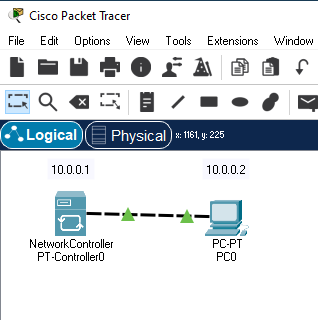
Users are encouraged to investigate various NC features by exploring this and other related sample files, that are part of your installation of Cisco Packet Tracer application. Some of the main features and interactions with NC are documented in more detail below.
Configuration and Management Using Web Interface
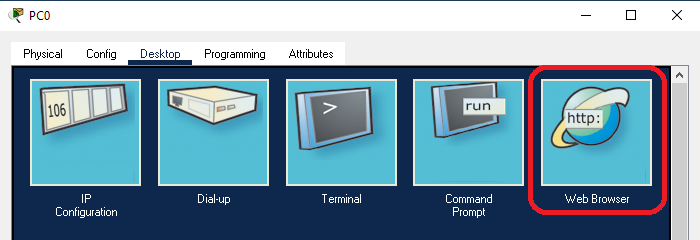
Initial Configuration
Accessing and managing Network Controllers using the web interface requires the user to have an "administrator"-level user account on the NC. When accessing the NC web interface for the first time, you will be asked to do an initial setup by creating such an account, as presented below
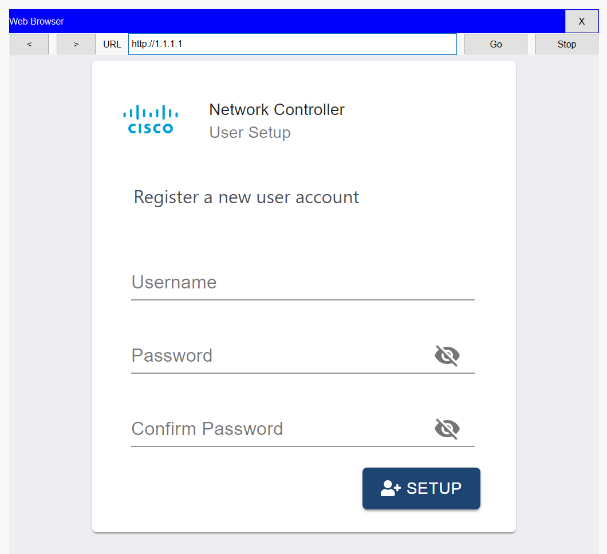
Use Username, Password, Confirm Password to enter your account attributes and click SETUP to create the new account.
Most NC network samples shipped with PT use user name "admin" and password "cisco", as the main administrator user account for their Network Controllers.
Dashboard and Basic Navigation
Having created this initial user account, accessing NC in the future will present you with a login screen in order to gain access to the rest of the controller's management interface, that start with a Dashboard view shown below
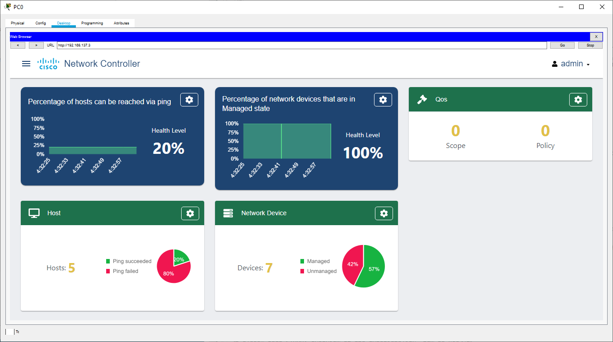
Clicking on the Dashboard Menu button
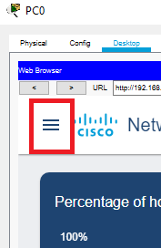
opens a menu from which you can access various management and monitoring functions of the Network Controller
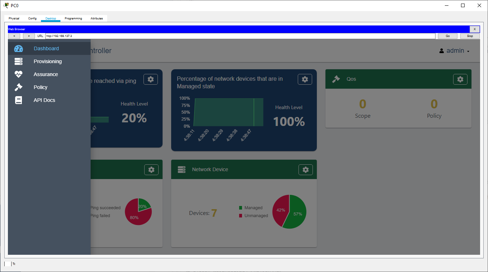
Likewise, clicking on the User name, admin in the case, below
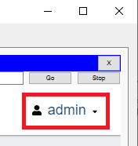
opens a menu from where NC administrators can perform User Management and Logout.
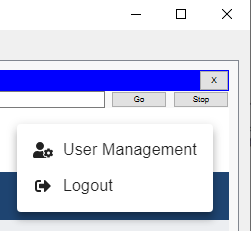
Each of the information panels on the Dashboard has icon allowing direct access that that panel's section of Network Controller management interface. This can be used as an alternative to using dashboard menu button described above.
Provisioning
In this section you can add devices to the controller, discover new devices on the network and create global credentials used for accessing said devices. To access these features you would select Provisioning from the main menu on Dashboard as shown below
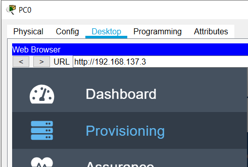
Discovery
In order to see status for existing device discovery processes, select Discovery on the navigation bar.
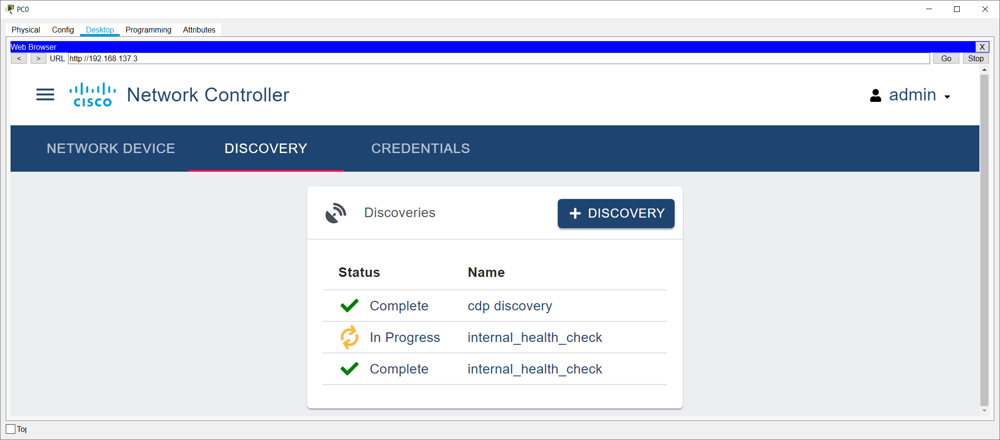
You can create a new discovery process by clicking on button. In the UI panel that opens, you will be able to configure a new discovery process based on CDP or IP address range.
Assurance
In this section you can take account of network devices, health of the network, view network topology and run path traces between hosts on the network. To access these features you would select Assurance from the main menu on Dashboard as shown below
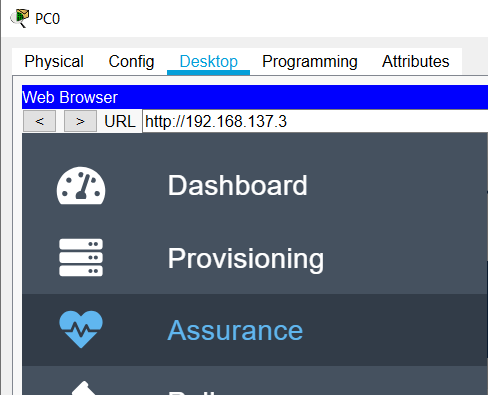
This will take you to a view showing overall health of the network.
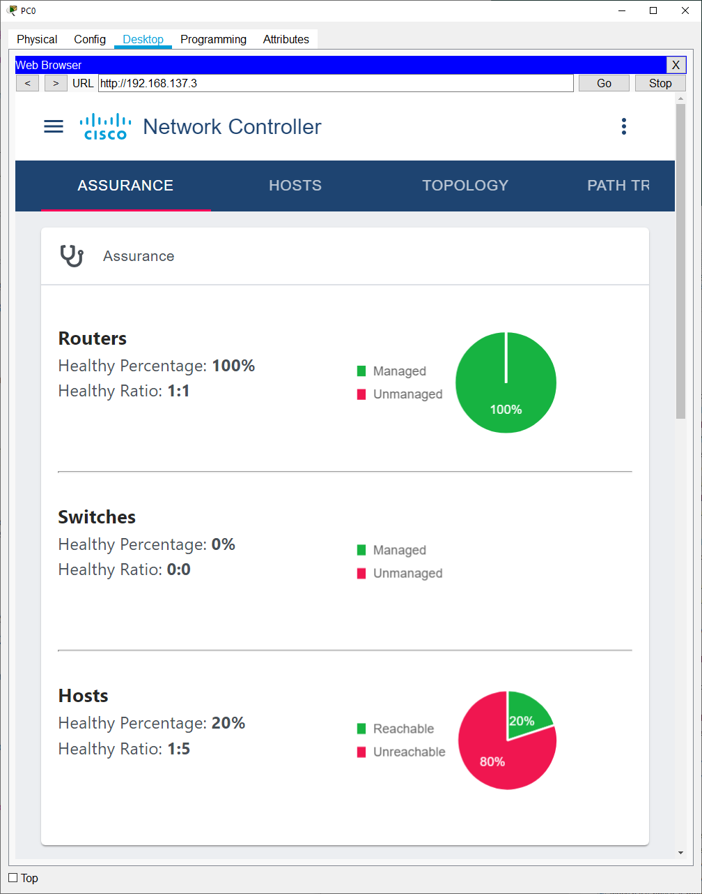
Hosts
Clicking on HOSTS in the nagivation bar brings you the list of all network hosts the controller is "aware" of.
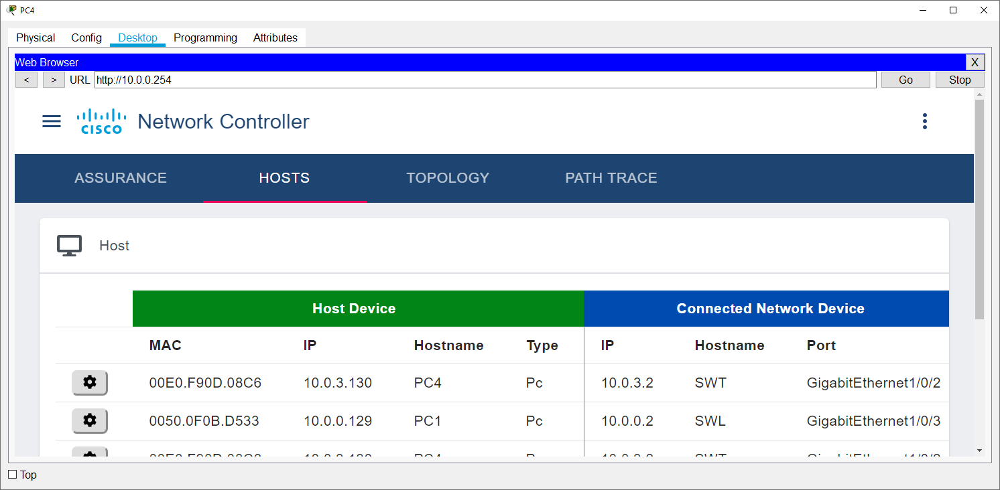
Topology
Likewise, TOPOLOGY in the nagivation bar will show all managed devices and their connections.
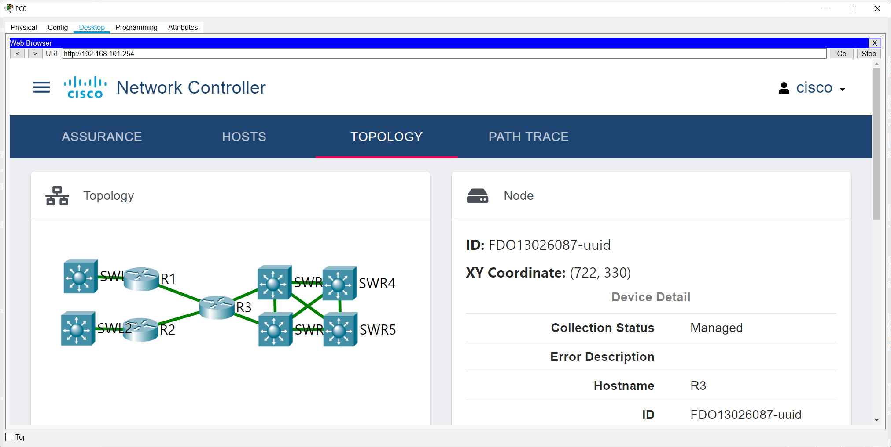
In order to see information about a particular device you click on that device icon and that will open up the device information panel to the right of the graphical topology view above. The information shown above is for device named R3.Path Trace
PATH TRACE - allows to trace traffic paths between interfaces of your choice. The view below shows initial screen where you can add new path traces by clicking
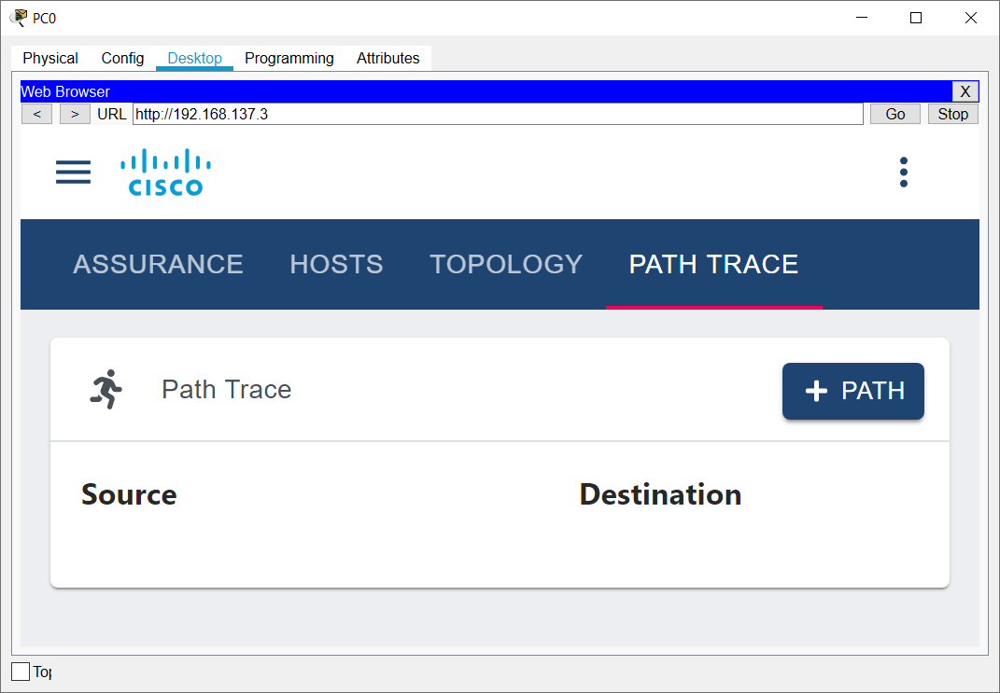
After you click on the path you created, the results of that path trace show as follows
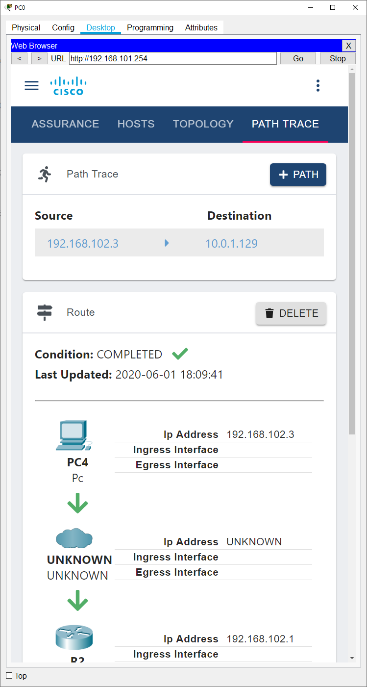
Due to limitations in PT, not all routes and interfaces of a path trace will be known.
Policy
In order to configure policy settings use Policy item on the main dashboard menu
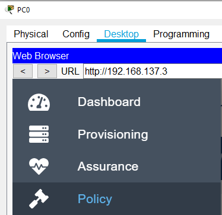
QoS
Here is an example of QoS configuration, using this interface
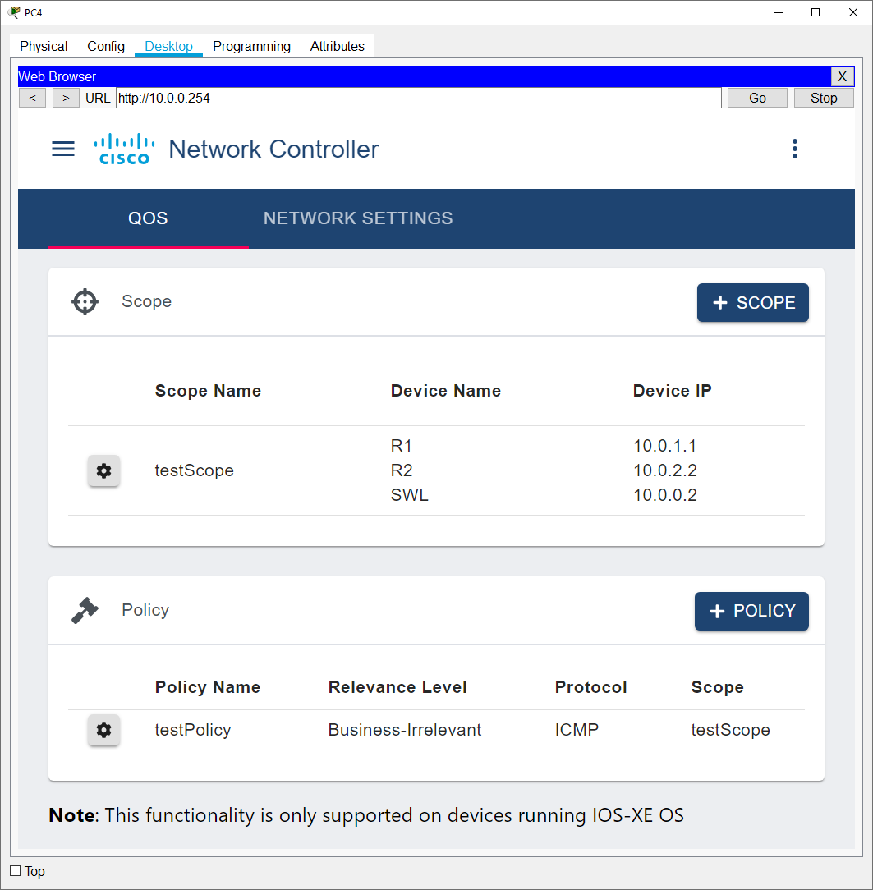
The Network Settings section will allow configuration of global settings for each managed device to ensure all devices use the same values. For example, DNS, NTP, and various other settings can be applied globally on all managed devices.
Refer to your curriculum for the relationship between QoS Scopes and Policies, and various other technology specific configurations.
API Documentation
Various features and information state available on Network Controller devices can be accessed programmatically via extensive REST API over HTTP. General API documentation can be accessed from NC dash board menu via API Docs menu item as shown above. This help also provides full content identical to said API Documentation.
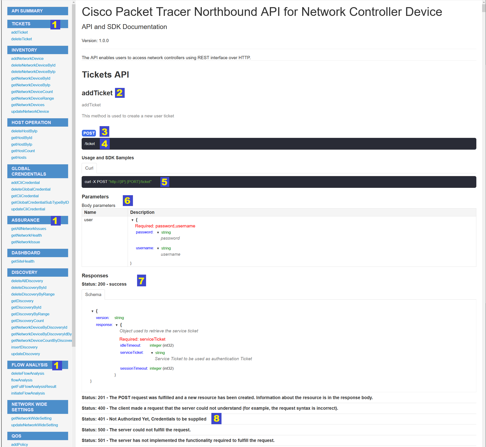
To describe briefly the documentation interface please refer to the numeral markings in the above image. The numbered items are described below
{
"username" : "admin99",
"password" : "d0ntsayit~75"
}
Note! Parameter Name user is only useful in cases where this API is used through a functional interface, that can be generated by tools like Swagger. In this case, user will be the name of a parameter received by the function addTicket. Discussion of this case is outside the scope of this document.
{
"response": {
"idleTimeout": 900,
"serviceTicket": "NC-5-9b777a75c7bf4bea9317-nbi",
"sessionTimeout": 3600
},
"version": "1.0"
}
{
"response": {
"detail": "Bad credentials",
"errorCode": "TICKET_BAD_USER",
"message": "User account is not found. Create a user account before requesting a ticket."
},
"version": "1.0"
}
Example: Python Scripting in Programming Tab
One way to access Network Controller from a PT PC device is to use its Programming Tab. Here's an example of a Python program one can find in a sample file named programming.pkt
from http import *
from time import *
import json
securityUrl = "http://10.1.1.2/api/v1/ticket"
securityData = json.dumps({"username": "test","password": "test"})
securityHeader = json.dumps({"content-type": "application/json"})
getUrl = "http://10.1.1.2/api/v1/inventory/network-device/count"
postUrl = "http://10.1.1.2/api/v1/flow-analysis"
postData = json.dumps({ "sourceIP": "10.1.1.1", "destIP": "10.1.1.1" })
def onHTTPDone(status, data):
print("status: " + str(status))
print("data: " + data)
def gotToken(status, data):
print("status: " + str(status))
print("data: " + data)
result = json.loads(data)
print("token: " + result["response"]["serviceTicket"])
http1 = HTTPClient()
http1.onDone(onHTTPDone)
http1.open(getUrl);
http2 = HTTPClient()
http2.onDone(onHTTPDone)
postHeader = {}
postHeader['content-type'] = 'application/json'
postHeader['x-auth-token'] = result["response"]["serviceTicket"]
http2.postWithHeader(postUrl, postData, json.dumps(postHeader));
def main():
http = HTTPClient()
http.onDone(gotToken)
http.postWithHeader(securityUrl, securityData, securityHeader)
# don't let it finish
while True:
sleep(3600)
if __name__ == "__main__":
main()
Example: Python Scripting in Programming Tab Using 'requests' Module
A popular way to interact with web APIs in Python is to use a requests module. PT Programming Tab provides this module as a built-in. Sample file programming_with_python_requests.pkt provides such an example, which is shown below
from http import *
from time import *
import json
import requests
getUrl = "http://10.1.1.2/api/v1/inventory/network-device/count"
postUrl = "http://10.1.1.2/api/v1/flow-analysis"
securityUrlReq = "http://10.1.1.2/api/v1/ticket"
securityDataReq = {"username": "test","password": "test"}
securityHeaderReq = {"content-type": "application/json"}
postDataReq = { "sourceIP": "10.1.1.1", "destIP": "10.1.1.1" }
def main():
print( "Getting a ticket ..." )
r = requests.post(securityUrlReq, data=json.dumps(securityDataReq), headers=securityHeaderReq, timeout=30)
print( r.status_code )
result = r.json()
print( result )
ticket = result["response"]["serviceTicket"]
print("ticket: " + ticket)
print( "Access without a ticket ..." )
r = requests.get(getUrl)
print( "OK: %s"%(r.ok,) )
print( r.text )
print( "Access using a ticket ..." )
postHeader = { 'x-auth-token' : ticket }
r = requests.post(postUrl, json=postDataReq, headers=postHeader);
print( r.status_code )
print( r.json() )
# don't let it finish
while True:
sleep(3600)
if __name__ == "__main__":
main()
Real World Access
As briefly mentioned at the beginning of this page, users can also access Network Controllers via HTTP REST API using real world tools like curl or programs, written in a programming language of your choice. For this purpose, use Access Enabled to start/stop the HTTP server. Use HTTP Port edit box to set the server port. Note, that allowed port numbers range from 1024 to 65535. Server Status gives current status of the server.When Enable External Access for Network Controller REST API is disabled in Preferences, the settings in this configuration panel will become read-only.
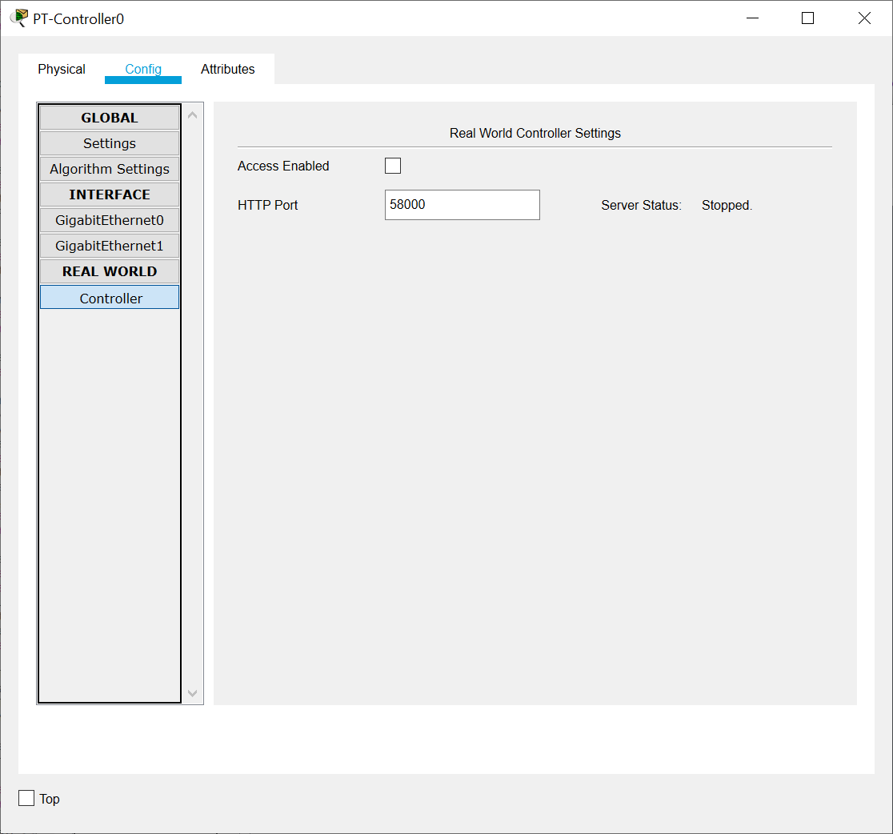
http://localhost:PORT/api/v1
For the configuration settings above, for instance, the URL for adding a ticket will be:
http://localhost:58000/api/v1/ticket
Note: For security purposes, Packet Tracer Network Controllers will only allow HTTP access from your real PC from the localhost. Remote connections will be refused.
Example: Using curl
To simplify experiments with real world access to NC, first load a sample sample file netcon.pkt and enable the real world access port on the network controller. We assume below that the port is 58000, but you will need to use the value you have enabled if it is different. Now, switch to a CLI or terminal application on your host OS and enter the following at the prompt:
curl -X post localhost:58000/api/v1/ticket -H "content-type: application/json" --data "{\"username\":\"admin\",\"password\":\"cisco\"}"
and you should be able to get a JSON response similar to
... curl statistics ...
{
"response": {
"idleTimeout": 900,
"serviceTicket": "NC-34-de50f79c8dab4bb4b478-nbi",
"sessionTimeout": 3600
},
"version": "1.0"
}
Using Python scripts
The example above, using Python requests module inside Programming Tab, can be used as a template for using it in a real world access scenario. For this to work, you would need to change all URLs, used in that sample, to the URL style shown in the curl example above. This is left as an exercise for the user.